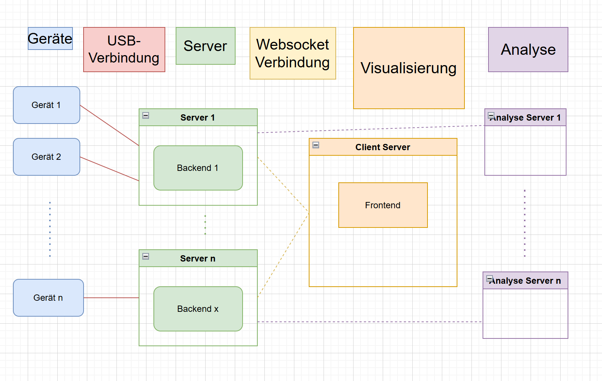
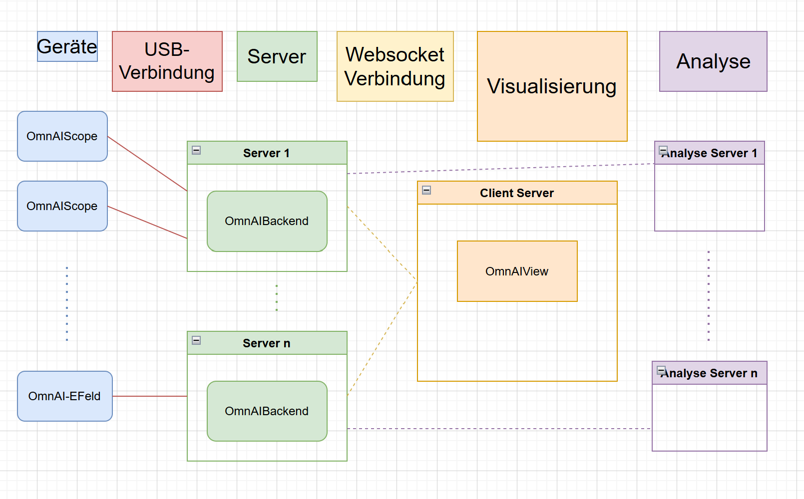

Dezentrale Aquise von Fahrzeugdaten mit dem OmnAIScope
That's me
Anna Theimann

B.Sc. Physik
Leitung des OmnAI-Projekts
WARUM ?

Autoreparatur in der Praxis

Aktuelle Möglichkeiten
- Anwendung von Erfahrung
- Marken abhängige Analyse des Fehlerspeichers
- Messung physischer Daten ?
Kernprobleme
- Unhandlich: Groß, schwer, schnell kaputt
- Unbedienbar: Kompliziert, Triggereinstellungen
- Informationslos: Keine direkte Analyse der Daten
Herausforderung in vielen Bereichen
- Wartung von technischen Anlagen
- Herstellung von Platinen
- Handwerkeralltag
Unser Schwerpunkt
Physische Daten erfassen, visualisieren, analysieren
Inhalt
- Architektur Design
- Unsere Implementierung
Grundkonzept
graph TD
A[Daten aufnehmen]
B[Daten visualisieren]
C[Daten analysieren]
Modularität ?
- Dezentralisierung der Datenaufnahme
- Dezentralisierung der Datananalyse
graph TD
A[Daten aufnehmen]
B[Daten visualisieren]
C[Daten analysieren]
A --> B
B --> A
B --> C
C --> B
Erweiterbarkeit?
- n-Messkanäle
- n-physikalische Größen
- n-Analysen
Architekturdesign : OmnAI-Ökosystem

Unsere Umsetzung

OmnAIScope: Fahrzeugdiagnose am Motor
Präzise, einfach, machbar
Das OmnAIScope
Das Oszilloskop von heute, für die Hosentasche


OmnAIView: Das Open Source Frontend zur Datenanalyse
- Open Source auf github (MIT License)
- Schnittstellen zur Verbindung mit beliebigen Backend und Analysen
- Einfach bedienbar, für viele Anwendungsfelder
OmnAI-Backend
- Backend zur Datenerfassung der OmnAI-Geräte
- Datenverarbeitung, Kommunikation mit FE , Hardware und Analyseservern
- Synchronisation der OmnAI-Geräte
- Wird demnächst Open Source gestellt
OmnAI-Analysen
- Analysen über REST erreichbar
Der Praxisfall
- Wartungsarbeiten an einem technischen Gerät
- Sporadische Ausfälle während der Laufzeit
- Anschluss der Hardware mit Raspberry Pi
- Kontinuierliche Datenaufnahme mehrerer Parameter nach Wunsch
- Visualisierung der Daten auf dem Laptop an einem anderen Standort
- Anfrage einer Analyse nach Unregelmäßigkeiten
- Antwort direkt auf dem verfügbaren Laptop abgreifbar
Unser Ziel für die nächsten 5 Jahre
- Modulare synchronisierbare Messgeräte
- Eine einheitliche einfache Software
- Automatische Datenanalyse
Die Zukunft der physischen Datenanalyse liegt in einem modularen, erweiterbaren, einheitlichen System.
Zeit für eure Fragen ( oder Meinungen )